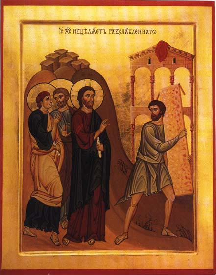

Synaxarion
Sunday of the Paralytic
Fourth Sunday of Pascha

On this day, the fourth Sunday after Pascha, we commemorate the paralytic who was healed by the Lord, and we celebrate this as a miracle of our Lord God and Savior Jesus Christ.
The commemoration of this event is made on this particular day because it occurred during the celebration of the Hebrew fifty days ( between Passover and Pentecost ) .
Christ entered Jerusalem during this time of the Jewish festival, and He went to a place north of the Temple near the Sheep Gate called the Sheep's Pool. Built by King Solomon, this pool was covered by a dome that was supported by five sets of pillars, thus creating five porches. It was called the Sheep's Pool because the sacrificial lambs were washed there before they were offered in the Temple.
An angel of the Lord came down at a certain time and stirred the water, and the first person to step into the water after it had been stirred was healed of whatever disease he possessed. Thus, the five porches were crowded with a multitude of sick folk as they awaited the moving of the water.
There Christ found a man who had been a paralytic for thirty-eight years and who, since he was so ill, did not have anyone to help him into the water. From this fact, we can learn how great a virtue it is to wait patiently. Since God was to grant baptism, the cleanser of all sins, He willed in His economy, according to the Old Law, to work this particular miracle through the use of water so that it would be that much easier to accept the mystery of Baptism.
Thus, Christ came to this paralytic, named Jairus, and questioned him, yet we should note that the paralytic did not ask for help. But Christ knew that He would be cured of his disease and said to him, "Pick up your bed and walk!" (John 5:8). Immediately, the ill man was made well and he picked up his bed and carried it on his shoulder to show that his deed was not just a fantasy in his mind, but a reality, and he went home.
Because it was a Sabbath (Saturday), the Jews did not allow him to carry his bed due to rabbinical regulations. But the paralytic brought the Lord Who had healed him before the Jews, saying it was the same One who told him to pick up his bed and walk, though it be a Sabbath, for he did not know who He was. During this time, a great number of people had gathered, and Christ had stepped aside and hidden himself.
However, Christ later found the man in the Temple and said to him, "Behold, you have been made well. Sin no more lest a worse thing come upon you" (John 5:14).
Many incorrectly say that Christ said this because this man was going to strike Jesus when He was brought to stand before Caiaphas the High Priest. The striking of Jesus was a worse temptation, and yielding to that temptation would have resulted in the inheritance of the eternal fire of torment, as compared to only thirty-eight years of paralysis.
The Lord particularly showed through these words that the illness of paralysis that had befallen the man was due to his sins. However, not all sicknesses are due to sin, but to the weakness of our nature, gluttony and our trifling deeds.
When the paralytic understood that Jesus had made him well, he reported it to all the Jews. They were infuriated by this and sought to kill Christ, for He had broken the Sabbath. Then Jesus spoke many things and showed that it is right to do good on the Sabbath and that He is the One who stated that the Sabbath should be honored and that He is equal with the Father and that even as the Father works, so does He.
It should be noted that this paralytic is not the same one whose account is related in the Holy Gospel of St. Matthew, for that miracle was done in a house, and men who were serving also heard, "Your sins are forgiven"; while this miracle was worked at the pool and the man had no one with him, as the Holy Gospel says.
The five porticoes full of infirm men symbolize that the Hebrew race was infirm in its five senses: sight, touch, taste, hearing, and smell. These were the illnesses of the sons of Israel: they were not pure in their sight, for they beheld the miracles and yet disregarded them; they had no taste for being thankful, for they ate manna and desired meat; they did not have a whole sense of smell, for instead of the fragrance of the Master, they longed for the stench of the devil; their hearing was tainted, for they listened to the whistlings of the serpents and disregarded the teachings of the prophets; their sense of touch was useless, for they called their idols gods and rejected the living God.
This miracle is celebrated now because it happened during the fifty days, like the miracle of the Samaritan woman and the blind man. The preceding Sundays, celebrating St. Thomas and the Myrrhbearing Women, were in honor of the fact that they led many to belief in the Resurrection of Christ from among the dead; while these other Sunday commemorations until the Ascension are made because they occurred during the Jewish celebration of those distinguished fifty days. This, in short, is what we have learned from St. John the Theologian.
In Thy indescribable compassion, O Christ our God, have mercy on us and save us, now and ever and unto ages of ages. Amen.
We confidently recommend our web service provider, Orthodox Internet Services: excellent personal customer service, a fast and reliable server, excellent spam filtering, and an easy to use comprehensive control panel.